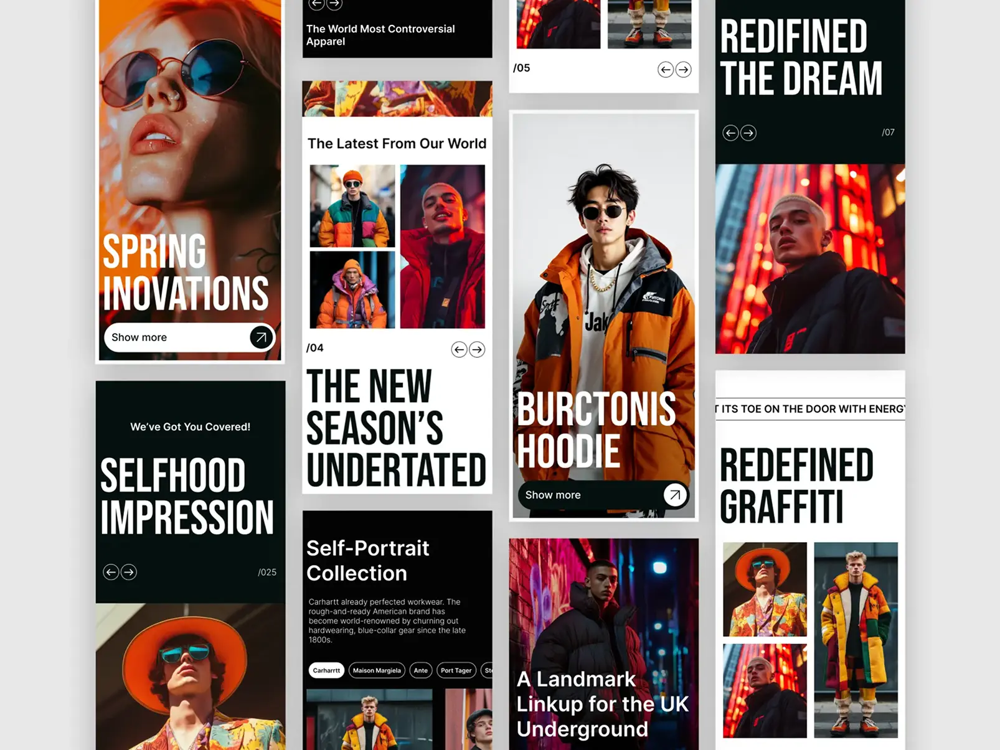
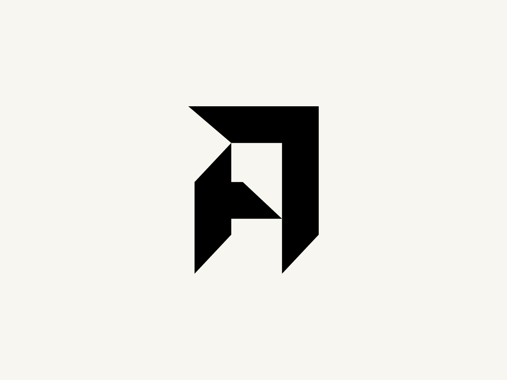

Teaching with meaning, designing with soul — a creative educator from Eastern Indonesia.
Teaching with meaning, designing with soul — a creative educator from Eastern Indonesia.
Teaching with meaning, designing with soul — a creative educator from Eastern Indonesia.
Suka semua hal tentang desain grafis sejak duduk di bangku sekolah. Sering menghabiskan waktu buat eksplorasi desain di internet. Bagi saya, desain itu bukan hanya sekedar soal estetika, tetapi sebuah seni untuk menyampaikan pesan.
Saya mengajar di salah satu sekolah menengah pertama di kota Kupang. Menulis di Medium, tentang buku-buku yang saya baca dan keresahan saya tentang dunia pendidikan.
Saat ini saya sedang mengembangkan BetaBisa! sebuah website literasi dan pustaka digital dan versi mini majalahnya, untuk anak-anak yang belum mampu membeli buku.
Saya juga suka membuat materi Bahasa Indonesia yang dikemas dalam sebuah halaman web untuk keperluan pembelajaran. Anda bisa melihatnya pada website projects di bawah.
Lebih suka mana antara mengajar dan desain? tentu saja keduanya. Menjadi guru sama halnya dengan mendesain. Sama-sama harus punya tujuan, keseimbangan, dan konsistensi.

POSTER ✦ LOGO ✦ TYPOGRAPHY ✦ CLOTHING ✦ BRANDING ✦ EDITORIAL ✦ WEB DESIGN ✦
POSTER ✦ LOGO ✦ TYPOGRAPHY ✦ CLOTHING ✦ BRANDING ✦ EDITORIAL ✦ WEB DESIGN ✦
POSTER ✦ LOGO ✦ TYPOGRAPHY ✦ CLOTHING ✦ BRANDING ✦ EDITORIAL ✦ WEB DESIGN ✦